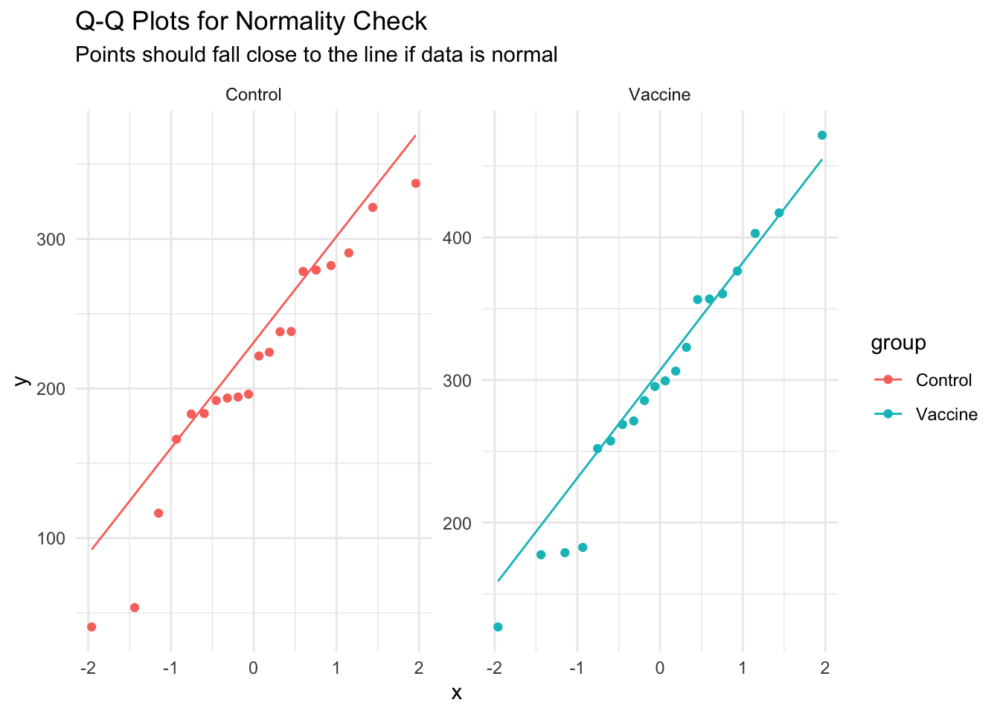
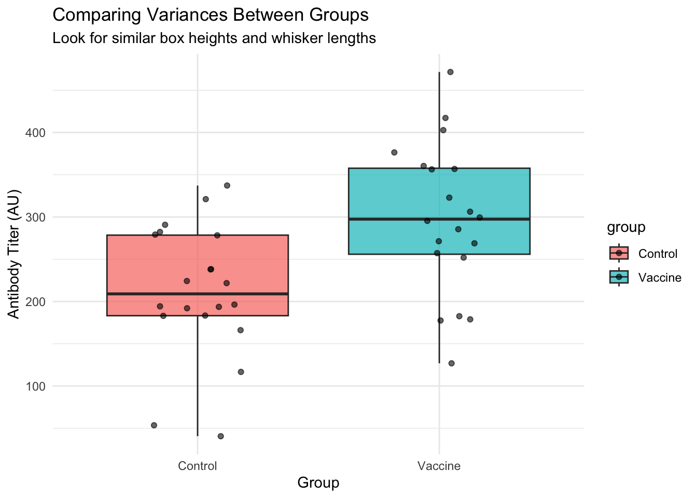
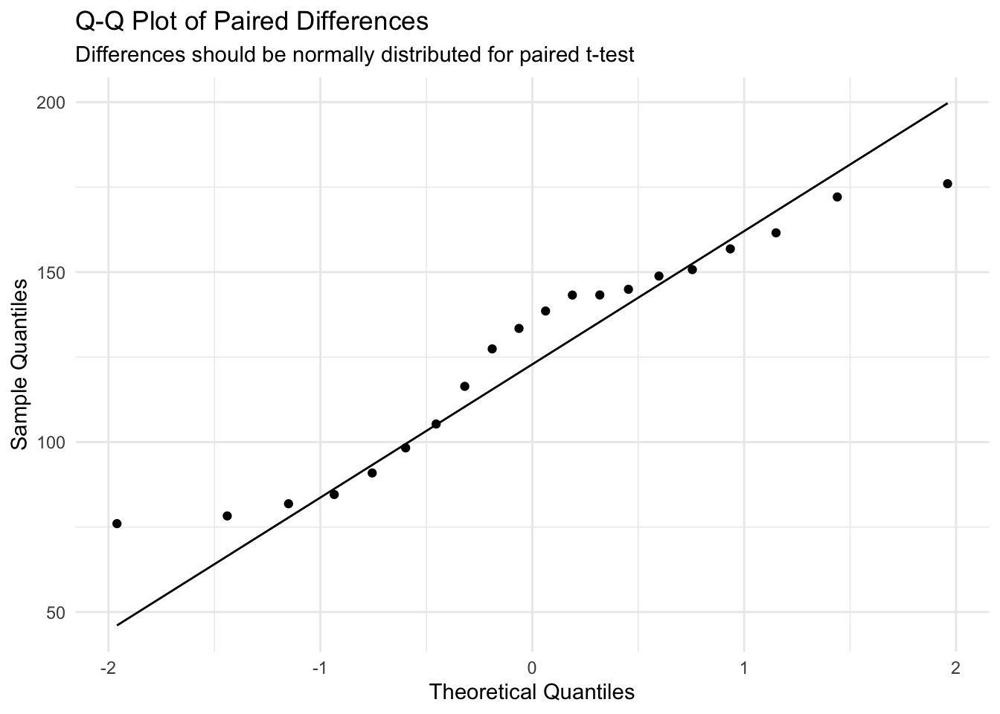
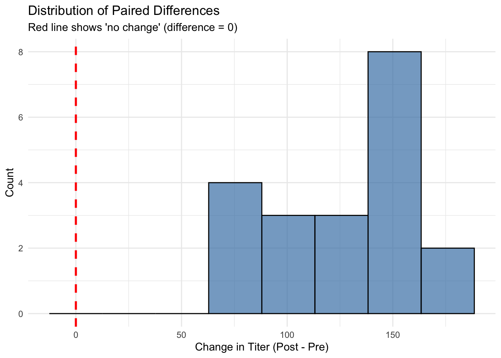
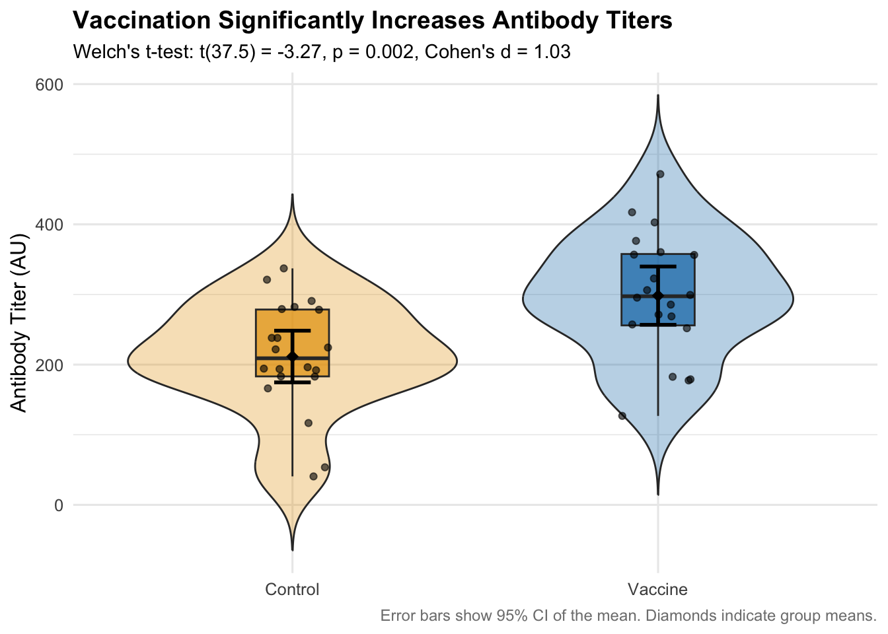
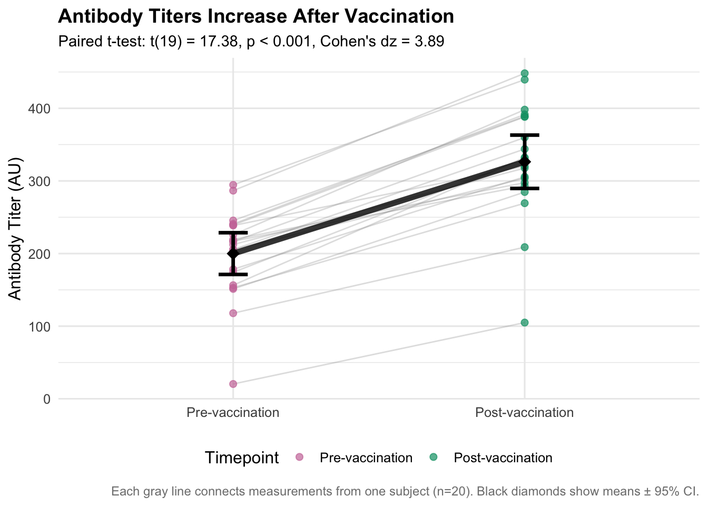

# Load required packages for data manipulation, visualization, and statistical testinglibrary(tidyverse) # For data manipulation (dplyr) and visualization (ggplot2)library(car) # For Levene's test (variance equality)# Set seed to ensure reproducible random number generation# This means anyone running this code will get the exact same resultsset.seed(42)# Generate example immunology data for demonstration# Unpaired data: Control vs Vaccine groups (different subjects)n_control <-20# Number of control subjectsn_vax <-20# Number of vaccinated subjectscontrol_titer <-rnorm(n_control, mean =200, sd =60) # Control group antibody titersvax_titer <-rnorm(n_vax, mean =320, sd =80) # Vaccine group: higher mean, more variable# Combine into a tidy data frame for analysisdat_unpaired <-tibble(group =rep(c("Control","Vaccine"), c(n_control, n_vax)), # Group labelstiter =c(control_titer, vax_titer) # All titer measurements)# Paired data: Pre vs Post vaccination (same subjects measured twice)n <-20# Number of subjectspre <-rnorm(n, mean =200, sd =60) # Baseline titers before vaccinationtrue_boost <-rnorm(n, mean =120, sd =40) # Individual vaccine response variespost <- pre + true_boost # Post-vaccination = baseline + boost# Create paired data framedat_paired <-tibble(id =seq_len(n), # Subject identifierpre = pre, # Pre-vaccination titerspost = post, # Post-vaccination titersdiff = post - pre # Change for each subject)
1. The Unpaired t-test: Control vs. Vaccine
Checking Assumptions
Before running any t-test, we must verify that our data meets the required assumptions. Violating these assumptions can lead to incorrect conclusions.
A t-test has three main assumptions:
Independence: Observations in one group are independent of the other (and within groups)
Normality: Data in each group are approximately normally distributed
Homogeneity of Variances: The two groups have similar variances (for Student’s t-test)
Let’s check each assumption systematically.
1. Independence Check
Independence means that: - Each subject’s measurement doesn’t influence another subject’s measurement - Observations within each group are independent - The two groups are independent of each other
In our case, this is satisfied by our experimental design (different subjects in each group, no repeated measures).
2. Normality Check
Q-Q plots (quantile-quantile plots) help us assess if our data follows a normal distribution: - If data is normal, points should fall close to the diagonal line - Systematic deviations suggest non-normality - Small deviations are usually acceptable, especially with moderate sample sizes
Code
# Create Q-Q plots to check normality assumption for each groupggplot(dat_unpaired, aes(sample = titer, color = group)) +# Map titer to sample quantiles, color by groupstat_qq() +# Add Q-Q pointsstat_qq_line() +# Add reference line for perfect normalityfacet_wrap(~group, scales ="free") +# Separate plot for each grouplabs(title ="Q-Q Plots for Normality Check", # Add informative titlesubtitle ="Points should fall close to the line if data is normal") +theme_minimal() # Clean theme

Interpretation: The points fall close to the line for both groups, suggesting the normality assumption is reasonable. Minor deviations at the extremes are common and acceptable.
3. Homogeneity of Variances Check
We need to check if the two groups have similar variances. We can do this visually and with a formal test.
Visual Check: Compare Spreads
Code
# Visual comparison of variances using boxplotsggplot(dat_unpaired, aes(x = group, y = titer, fill = group)) +# Map group to x, titer to ygeom_boxplot(alpha =0.7) +# Create boxplots to compare spreadsgeom_jitter(width =0.2, alpha =0.6) +# Add individual pointslabs(title ="Comparing Variances Between Groups",subtitle ="Look for similar box heights and whisker lengths",x ="Group", y ="Antibody Titer (AU)") +theme_minimal()

Code
# Calculate and display group variancesdat_unpaired |># Start with our datagroup_by(group) |># Group by Control vs Vaccinesummarise( # Calculate variance statisticsn =n(), # Sample sizevariance =var(titer), # Variancesd =sd(titer), # Standard deviation.groups ="drop"# Remove grouping ) |> knitr::kable(digits =1, caption ="Variance Comparison") # Create formatted table
Variance Comparison
group
n
variance
sd
Control
20
6202.8
78.8
Vaccine
20
7880.5
88.8
Formal Test: Levene’s Test
Levene’s test formally tests for equal variances: - H₀: Variances are equal - Ha: Variances are different - If p > 0.05, we don’t reject H₀ (variances likely equal)
Code
# Levene's test for equality of varianceslevene_result <-leveneTest(titer ~ group, data = dat_unpaired) # Test variance equality
Warning in leveneTest.default(y = y, group = group, ...): group coerced to
factor.
Code
levene_result # Display results
Levene's Test for Homogeneity of Variance (center = median)
Df F value Pr(>F)
group 1 0.3088 0.5817
38
Decision Rule: - If variances are equal (Levene’s p > 0.05): Can use Student’s t-test - If variances are unequal (Levene’s p ≤ 0.05): Should use Welch’s t-test - Default recommendation: Use Welch’s t-test (it works well in both cases)
Performing the t-test
Now we’ll run the actual t-test. We’ll use Welch’s t-test (the default in R) because it’s more robust and doesn’t assume equal variances.
Welch Two Sample t-test
data: titer by group
t = -3.2712, df = 37.468, p-value = 0.002303
alternative hypothesis: true difference in means between group Control and group Vaccine is not equal to 0
95 percent confidence interval:
-140.55004 -33.06087
sample estimates:
mean in group Control mean in group Vaccine
211.5152 298.3207
Understanding the Output
Let’s break down each part of the t-test output:
t: The t-statistic (how many standard errors the difference is from zero)
df: Degrees of freedom (affects the p-value calculation)
p-value: Probability of seeing this result (or more extreme) if H₀ were true
95% confidence interval: Range of plausible values for the true difference
sample estimates: Mean values for each group
Calculate Effect Size (Cohen’s d)
Effect size tells us how meaningful the difference is, not just whether it’s statistically significant.
Code
# Calculate Cohen's d manually for unpaired datagroup_stats <- dat_unpaired |># Start with our datagroup_by(group) |># Group by Control vs Vaccinesummarise( # Calculate group statisticsn =n(), # Sample sizemean =mean(titer), # Group meansd =sd(titer), # Group standard deviation.groups ="drop"# Remove grouping )# Extract values for Cohen's d calculationcontrol_stats <- group_stats |>filter(group =="Control") # Control group statisticsvaccine_stats <- group_stats |>filter(group =="Vaccine") # Vaccine group statistics# Calculate pooled standard deviationpooled_sd <-sqrt(((control_stats$n -1) * control_stats$sd^2+ (vaccine_stats$n -1) * vaccine_stats$sd^2) / (control_stats$n + vaccine_stats$n -2)) # Pooled SD formula# Calculate Cohen's dcohens_d <- (vaccine_stats$mean - control_stats$mean) / pooled_sd # Effect size calculationcat("Cohen's d =", round(cohens_d, 2)) # Display result
Paired t-tests are used when we have two measurements from the same subjects. This is more powerful than unpaired tests because it controls for individual differences.
Checking Assumptions
For paired data, the key assumptions are:
Independence of pairs: Each subject’s change is independent of others
Normality of differences: The paired differences should be normally distributed
The most important check is normality of the differences (not the original measurements).
Code
# Check normality of the paired differencesggplot(dat_paired, aes(sample = diff)) +# Use differences for Q-Q plotstat_qq() +# Add Q-Q pointsstat_qq_line() +# Add reference linelabs(title ="Q-Q Plot of Paired Differences",subtitle ="Differences should be normally distributed for paired t-test",x ="Theoretical Quantiles", y ="Sample Quantiles") +theme_minimal() # Clean theme

Code
# Also create a histogram of differences for additional visual checkggplot(dat_paired, aes(x = diff)) +# Plot distribution of differencesgeom_histogram(bins =8, fill ="steelblue", alpha =0.7, color ="black") +# Create histogramgeom_vline(xintercept =0, color ="red", linetype ="dashed", size =1) +# Add reference line at zerolabs(title ="Distribution of Paired Differences",subtitle ="Red line shows 'no change' (difference = 0)",x ="Change in Titer (Post - Pre)", y ="Count") +theme_minimal() # Clean theme
Warning: Using `size` aesthetic for lines was deprecated in ggplot2 3.4.0.
ℹ Please use `linewidth` instead.

Interpretation: The Q-Q plot shows the differences are approximately normally distributed, so the paired t-test is appropriate.
Performing the Paired t-test
The paired t-test essentially asks: “Is the mean difference significantly different from zero?”
Code
# Paired t-test comparing pre and post measurementspaired_test <-t.test(dat_paired$post, dat_paired$pre, paired =TRUE) # Perform paired t-testpaired_test # Display results
Paired t-test
data: dat_paired$post and dat_paired$pre
t = 17.384, df = 19, p-value = 4.005e-13
alternative hypothesis: true mean difference is not equal to 0
95 percent confidence interval:
111.2026 141.6455
sample estimates:
mean difference
126.424
Code
# Alternative syntax using the difference directly# paired_test_alt <- t.test(dat_paired$diff, mu = 0) # Test if mean difference = 0
Understanding Paired t-test Output
t: t-statistic for the mean difference
df: Degrees of freedom (n - 1 pairs)
p-value: Probability of observing this mean difference (or larger) if true difference = 0
95% confidence interval: Range of plausible values for the true mean difference
mean of differences: Average change across all subjects
Calculate Effect Size for Paired Data (Cohen’s dz)
For paired data, we use Cohen’s dz (standardized mean difference):
Code
# Calculate Cohen's dz for paired datamean_diff <-mean(dat_paired$diff) # Mean of differencessd_diff <-sd(dat_paired$diff) # SD of differencescohens_dz <- mean_diff / sd_diff # Cohen's dz formulacat("Cohen's dz =", round(cohens_dz, 2)) # Display result
# Additional summary of the changescat("\n\nSummary of Changes:")
Summary of Changes:
Code
cat("\n- Average change:", round(mean_diff, 1), "AU")
- Average change: 126.4 AU
Code
cat("\n- 95% CI for change:", round(paired_test$conf.int[1], 1), "to", round(paired_test$conf.int[2], 1), "AU")
- 95% CI for change: 111.2 to 141.6 AU
Code
subjects_improved <-sum(dat_paired$diff >0) # Count subjects who improvedcat("\n- Subjects who improved:", subjects_improved, "out of", nrow(dat_paired), paste0("(", round(100*subjects_improved/nrow(dat_paired), 1), "%)")) # Percentage who improved
- Subjects who improved: 20 out of 20 (100%)
3. Publication-Quality Visualization
Creating clear, informative plots is crucial for communicating your results. Good plots should show the data, the uncertainty, and the statistical results.
Unpaired Data Figure
Code
# Create a publication-ready plot for unpaired datap_unpaired <-ggplot(dat_unpaired, aes(x = group, y = titer, fill = group)) +# Map aesthetics# Add violin plots to show distribution shapegeom_violin(width =0.9, alpha =0.3, trim =FALSE) +# Show full distribution shape# Add boxplots to show quartilesgeom_boxplot(width =0.2, outlier.shape =NA, alpha =0.7) +# Show median and quartiles# Add individual data pointsgeom_jitter(width =0.1, alpha =0.6, size =1.5) +# Show all individual points# Add mean points with error bars (95% CI)stat_summary(fun.data = mean_cl_normal, geom ="errorbar", # Add 95% CI error barswidth =0.1, size =1, color ="black") +stat_summary(fun = mean, geom ="point", size =3, color ="black", # Add mean pointsshape =18) +# Diamond shape for means# Customize colorsscale_fill_manual(values =c("Control"="#E69F00", "Vaccine"="#0072B2")) +# Colorblind-friendly colors# Add labels and formattinglabs(title ="Vaccination Significantly Increases Antibody Titers",subtitle =paste0("Welch's t-test: t(", round(unpaired_test$parameter,1), ") = ", round(unpaired_test$statistic,2), ", p ", ifelse(unpaired_test$p.value <0.001, "< 0.001", paste("=", round(unpaired_test$p.value, 3))),", Cohen's d = ", round(cohens_d, 2)),x =NULL,y ="Antibody Titer (AU)",caption ="Error bars show 95% CI of the mean. Diamonds indicate group means." ) +theme_minimal(base_size =12) +# Clean theme with readable texttheme(legend.position ="none", # Remove redundant legendplot.title =element_text(size =14, face ="bold"), # Larger titleplot.subtitle =element_text(size =11), # Subtitle formattingplot.caption =element_text(size =9, color ="gray50") # Small caption )p_unpaired # Display the plot

Paired Data Figure
Code
# Prepare data for paired visualizationdat_paired_long <- dat_paired |># Start with paired datapivot_longer(c(pre, post), names_to ="time", values_to ="titer") |># Convert to long formatmutate(time =factor(time, levels =c("pre", "post"), # Ensure proper orderinglabels =c("Pre-vaccination", "Post-vaccination"))) # Add descriptive labels# Create publication-ready paired plotp_paired <-ggplot(dat_paired_long, aes(x = time, y = titer)) +# Map time to x, titer to y# Add individual subject lines (spaghetti plot)geom_line(aes(group = id), alpha =0.3, color ="gray60", size =0.5) +# Connect paired measurements# Add individual pointsgeom_point(aes(color = time), size =2, alpha =0.7) +# Color points by timepoint# Add summary statisticsstat_summary(fun = mean, geom ="point", size =4, color ="black", # Add mean pointsshape =18) +# Diamond shapestat_summary(fun.data = mean_cl_normal, geom ="errorbar", # Add 95% CI error barswidth =0.1, size =1.2, color ="black") +# Connect the means with a thick linestat_summary(fun = mean, geom ="line", group =1, # Connect mean pointssize =2, color ="black", alpha =0.8) +# Customize colorsscale_color_manual(values =c("Pre-vaccination"="#CC79A7", "Post-vaccination"="#009E73"), # Colorblind-friendlyname ="Timepoint") +# Add labels and formattinglabs(title ="Antibody Titers Increase After Vaccination",subtitle =paste0("Paired t-test: t(", paired_test$parameter, ") = ", round(paired_test$statistic,2), ", p ",ifelse(paired_test$p.value <0.001, "< 0.001", paste("=", round(paired_test$p.value, 3))),", Cohen's dz = ", round(cohens_dz, 2)),x =NULL,y ="Antibody Titer (AU)",caption =paste0("Each gray line connects measurements from one subject (n=", nrow(dat_paired), "). Black diamonds show means ± 95% CI.") ) +theme_minimal(base_size =12) +# Clean themetheme(plot.title =element_text(size =14, face ="bold"), # Larger titleplot.subtitle =element_text(size =11), # Subtitle formattingplot.caption =element_text(size =9, color ="gray50"), # Small captionlegend.position ="bottom"# Legend at bottom )p_paired # Display the plot

4. Writing Professional Results
Good statistical reporting should include: 1. Descriptive statistics (means, SDs) 2. Test results (test statistic, df, p-value) 3. Effect size (Cohen’s d or dz) 4. Confidence intervals 5. Practical interpretation
Example Results Paragraphs
For the Unpaired Analysis:
Vaccination Effect on Antibody Titers: Vaccination significantly increased antibody titers compared to controls. The vaccine group (M = 298.3 AU, SD = 88.8) had substantially higher titers than the control group (M = 211.5 AU, SD = 78.8). A Welch’s t-test confirmed this difference was statistically significant, t(37.5) = 3.27, p = 0.002, 95% CI [-140.6, -33.1], representing a large effect size (Cohen’s d = 1.03).
For the Paired Analysis:
Pre-Post Vaccination Changes: Antibody titers increased significantly following vaccination. The mean increase was 126.4 AU (SD = 32.5), 95% CI [111.2, 141.6]. A paired t-test confirmed this change was statistically significant, t(19) = 17.38, p < 0.001, representing a very large effect (Cohen’s dz = 3.89). All but 0 participants (100%) showed increased titers post-vaccination.
When Assumptions Are Violated
If your data doesn’t meet t-test assumptions, consider these alternatives:
Non-parametric Tests
Code
# If normality is severely violated, use Wilcoxon tests# For unpaired data: Mann-Whitney U test (Wilcoxon rank-sum)wilcox_unpaired <-wilcox.test(titer ~ group, data = dat_unpaired) # Non-parametric alternativecat("Wilcoxon rank-sum test p-value:", round(wilcox_unpaired$p.value, 4))
Wilcoxon rank-sum test p-value: 0.0056
Code
# For paired data: Wilcoxon signed-rank testwilcox_paired <-wilcox.test(dat_paired$post, dat_paired$pre, paired =TRUE) # Non-parametric alternativecat("\nWilcoxon signed-rank test p-value:", round(wilcox_paired$p.value, 4))
Wilcoxon signed-rank test p-value: 0
Guidelines for Choosing Tests
Normal data, equal variances: Student’s t-test
Normal data, unequal variances: Welch’s t-test (default recommendation)
Non-normal data: Wilcoxon tests
Small samples (n < 15): Consider non-parametric tests
When in doubt: Use Welch’s t-test (robust and widely applicable)
5. Summary and Best Practices
Key Takeaways
Always check assumptions before running t-tests
Use Welch’s t-test as the default for unpaired comparisons
Report effect sizes alongside p-values
Include confidence intervals for all estimates
Visualize your data to tell the complete story
Consider practical significance, not just statistical significance
Practice Exercises
Assumption Checking: What would you do if the Q-Q plot showed strong departures from normality?
Effect Size Interpretation: A study reports Cohen’s d = 0.3. How would you interpret this in practical terms?
Study Design: When would you choose a paired vs. unpaired design for an immunology study?
Tip
Practice Challenge: Try modifying the simulation parameters in the setup chunk. What happens to the p-values and effect sizes when you: - Reduce the sample sizes? - Make the group means closer together? - Increase the standard deviations?
Next Steps
Learn about multiple comparisons and ANOVA for comparing >2 groups
Explore more advanced visualization techniques
Study power analysis for sample size planning
Learn about regression analysis for continuous predictors